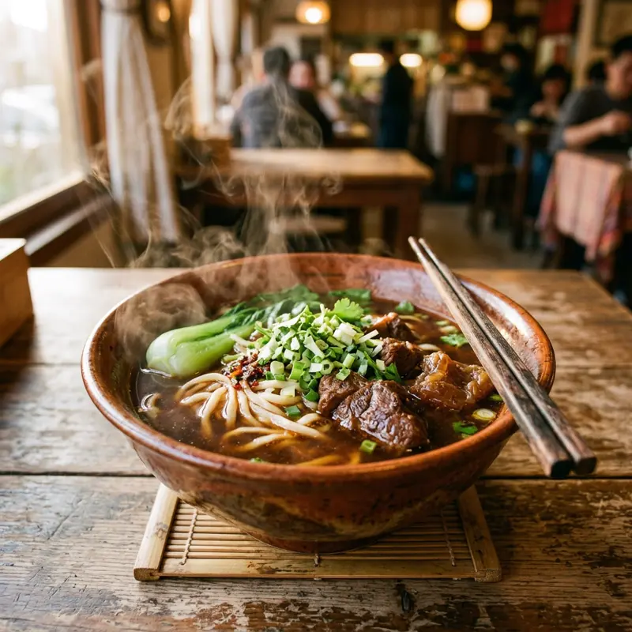

우육면(牛肉麵)은 대만을 대표하는 국물 요리로, 진한 홍샤오(紅燒) 스타일과 맑은 칭둔(清燉) 스타일 두 갈래로 나뉩니다. 타이베이 융캉제 인근엔 수십 년 된 노포가 몰려있고, 매년 열리는 타이베이 우육면 페스티벌에서 우승한 집들은 항상 웨이팅이 길어요. 국물에 고추기름과 산차이(酸菜)를 더해 자기 입맛대로 조절해 먹는 게 포인트입니다.
무엇이 특별할까요?
01
홍샤오 vs 칭둔
홍샤오는 간장·두반장 베이스로 얼큰하고 진하고, 칭둔은 소금과 향신료만으로 우려낸 맑고 깔끔한 맛이에요. 처음이라면 홍샤오부터 시작해보세요.
02
면발 선택
가게에 따라 넓은 면(寬麵), 가는 면(細麵), 도삭면(刀削麵) 중 고를 수 있어요. 없으면 기본 면으로 나옵니다.
03
곁들임 반찬
테이블에 놓인 산차이(절인 갓)와 고추기름은 셀프로 추가하는 용도예요. 소룡포나 소채(小菜)를 곁들이면 든든해요.
이렇게 즐겨보세요
- ✓국물 색이 진하면 홍샤오, 맑으면 칭둔 — 메뉴판 사진으로 먼저 확인하기
- ✓웨이팅 긴 노포는 회전율이 빨라 대부분 20분 안에 착석 가능
- ✓고기 부위(근육/힘줄/양지)를 고를 수 있는 곳도 있으니 메뉴 확인
- ✓매운 정도는 고추기름을 따로 추가해 직접 조절하기
Real spots
전체 화면 지도로 보기 →
여행자들이 등록한 진짜 맛집
이 카테고리에 실제로 등록된 맛집을 지역별로 모아봤어요. 새로 등록되면 여기에도 바로 반영돼요. 핀을 눌러 추천 투표도 남길 수 있어요.
📍타이베이
📍타이난
Join the map
지금 등록하기 →
나만의 맛집을 공유해주세요 🤫
여러분의 발견이 다른 여행자들에게 진짜 대만을 경험하게 해줍니다.